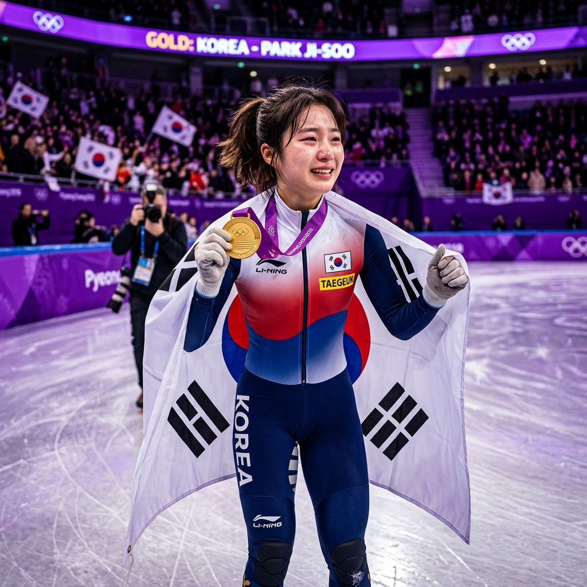
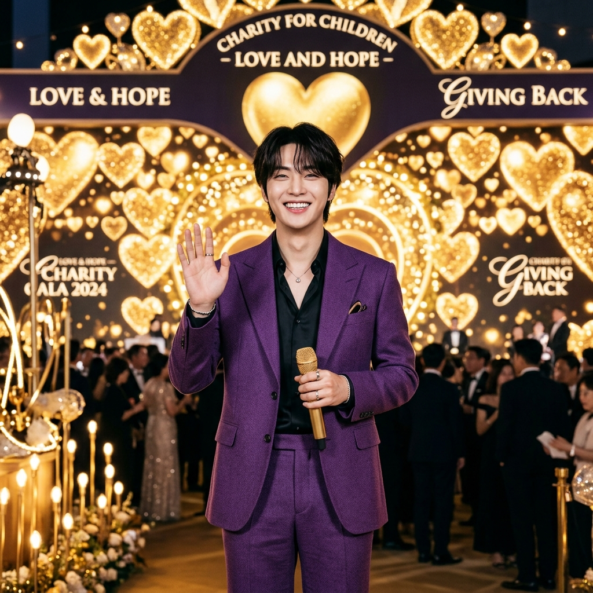

2026년 실시간 검색 1위를 차지한
이름 TOP 5

2026년, 대한민국의 검색창은 단순한 정보 탐색의 도구를 넘어 '시대의 감정 지표'가 되었습니다. 수천만 명이 동시에 같은 이름을 검색하는 그 순간, 그 이름은 단순한 고유명사를 넘어 하나의 문화 현상이 됩니다.
올해 검색창을 지배한 이름들 속에는 놀라운 공통점이 숨겨져 있었습니다. 빛(明), 도움(佑), 보석(瑛), 희망(Hope)... 이 이름들은 마치 처음부터 세상의 주목을 받도록 '부름 받은' 것처럼, 그 한자 속에 운명적 에너지를 품고 있었습니다. QARAH가 2026년 실시간 검색 1위를 차지한 5개의 이름을 심층 분석합니다.
🏆 TOP 5 이름 심층 분석
이지은 (아이유)
李知恩 · IU드라마 '21세기 대군부인'이 방영 2주 만에 TV-OTT 화제성 1위를 기록하며, 아이유는 출연자 화제성 부문에서 3주 연속 1위를 차지했습니다. 디즈니+를 통해 글로벌 시장(아시아, 북미, 유럽)에서도 폭발적인 시청률을 기록 중입니다.
'알 지(知)'와 '은혜 은(恩)'의 결합은 "은혜를 깊이 아는 자"라는 뜻을 담고 있습니다. 단순히 받는 것에 그치지 않고, 은혜의 본질을 이해하고 되돌려 주는 사람이라는 의미입니다. 예명 'IU'는 'I(나)'와 'You(너)'의 합성어로 "음악으로 너와 내가 하나가 된다"는 철학을 담고 있습니다. 인스타그램 아이디 '이지금(dlwlrma)'은 은(銀)보다 금(金)이 되겠다는 중의적 포부를 보여줍니다.
변우석
邊佑錫'21세기 대군부인'에서 이안대군 이완 역으로 출연하며 출연자 화제성 2위를 기록. 아이유와 함께 드라마의 폭발적 인기를 이끌며 대세 배우로서의 입지를 확고히 다졌습니다.
'도울 우(佑)'와 '줄 석(錫)'의 조합은 "하늘의 도움을 받아 세상에 베푸는 자"라는 뜻입니다. 이름학적으로 '佑'는 신의 보호와 축복을, '錫'은 하사와 내려줌을 의미하여, 스스로의 힘을 발휘하면서도 복을 자연스럽게 만들어가는 기운을 품고 있습니다. 이름 그대로 대중에게 깊은 감동을 '베풀고' 있는 셈입니다.
장원영
張員瑛2026년 4월 걸그룹 개인 브랜드평판 압도적 1위를 기록. 아이브(IVE)의 글로벌 활동과 함께 K-POP 업계에서 가장 핫한 이름으로 자리매김했습니다.
'옥 광채 영(瑛)' 자는 옥에서 반사되는 은은한 빛을 의미합니다. 이름 전체는 "보석처럼 빛나는 매력을 세상에 펼치는 존재"로 해석됩니다. 흥미롭게도 어머니가 중성적 느낌의 이름을 원했다고 알려져 있으며, '원영'이라는 발음 자체가 '영원(永遠)'을 연상시켜 팬들 사이에서 "영원히 빛나는 보석 상자"로 불립니다.

심석희
沈錫希밀라노 대회 쇼트트랙 여자 3,000m 계주에서 8년 만의 금메달을 획득하며 대한민국을 감동의 도가니로 만들었습니다. 스포츠 역사에 새로운 장을 열었습니다.
'錫(석)'은 삼척 심씨 검교공파 25세손의 항렬자로, 가문의 전통을 잇는 글자입니다. '希(희)'는 '바라다'라는 뜻으로, 이름 전체는 "빛나는 것을 간절히 바라는 자"라는 의미를 담고 있습니다. 8년간의 역경을 딛고 빙판 위에서 찬란한 금빛을 되찾은 그녀의 이야기가 이름의 뜻과 정확히 일치합니다.

정호석 (제이홉)
鄭號錫 · J-Hope2026년 2월, 생일을 맞아 3억 5천만 원을 기부한 사실이 알려지며 실시간 검색어를 장악했습니다. BTS 멤버로서의 선한 영향력이 다시 한번 증명된 순간이었습니다.
'號(호)'는 '이름을 떨치다', '錫(석)'은 '하사하다'라는 뜻으로, "자신의 이름을 세상에 널리 떨치는 자"라는 의미입니다. 예명 'J-Hope'는 본명의 이니셜 'J'와 'Hope(희망)'의 합성어로, 리더 RM이 판도라 상자에 마지막까지 남은 것이 '희망'이라는 점에서 영감을 받아 추천한 이름입니다. 3.5억 기부로 '희망'의 의미를 글자 그대로 실현하고 있습니다.